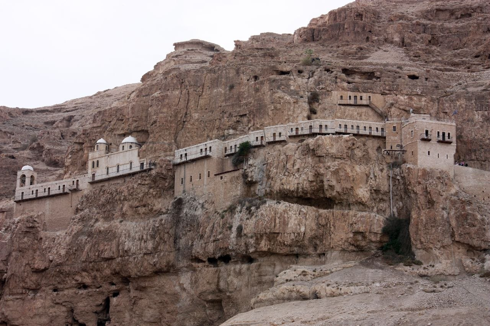
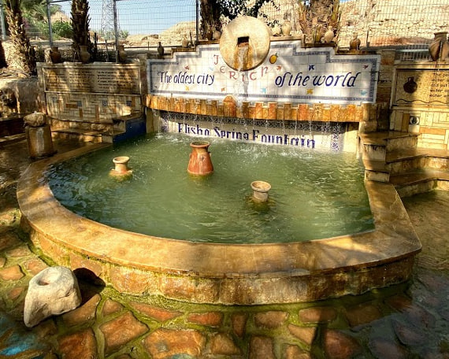
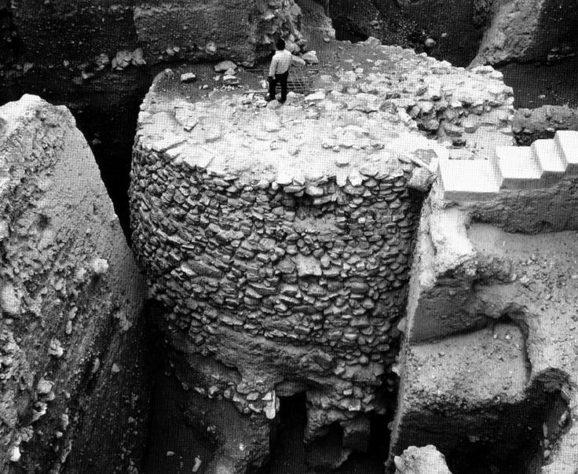
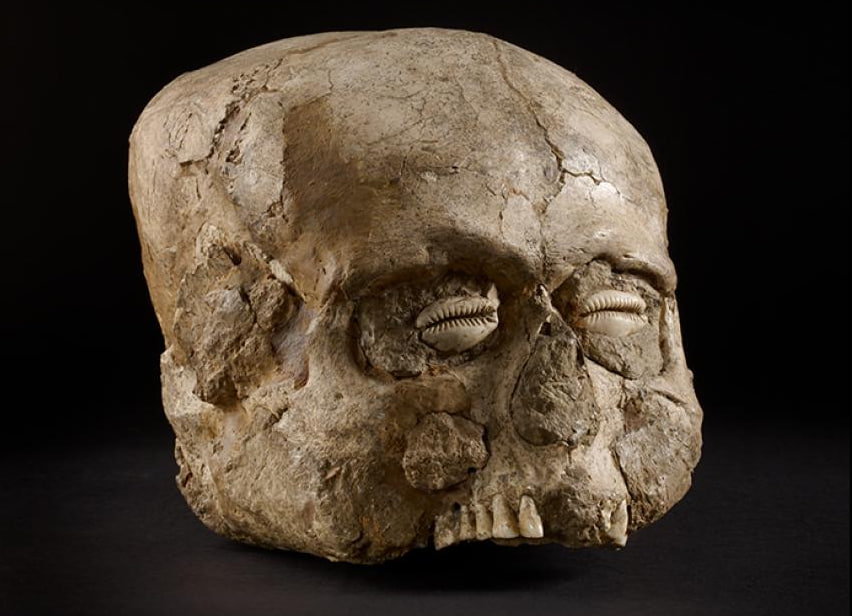
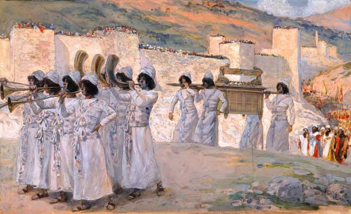
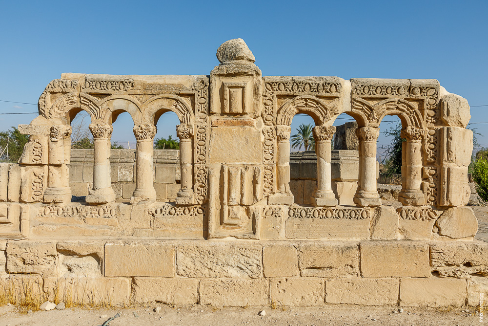

Иерихон: Древнейшее укрепленное поселение
Иерихон по праву считается одним из древнейших непрерывно обитаемых поселений на Земле, расположенным в Иорданской долине, примерно в десяти километрах к северу от Мертвого моря и на 258 метров ниже уровня Мирового океана.
История этого уникального оазиса перевернула устоявшиеся научные представления о происхождении цивилизаций. Если традиционные гипотезы утверждали, что к оседлому образу жизни человека привело развитие интенсивного земледелия, то в Иерихоне археологи зафиксировали обратный процесс. Сначала бродячие охотники-собиратели натуфийской культуры основали здесь постоянный лагерь вокруг неистощимого источника воды, и лишь затем в этих стенах сформировалась передовая аграрная экономика, навсегда изменившая вектор развития человечества.
Природные истоки и переход к оседлости
Источник Айн-эс-Султан
Зарождение жизни на этом месте стало возможным благодаря Айн-эс-Султан (Источнику Елисея) — мощному подземному ключу, дающему более 4500 литров пресной воды в минуту посреди выжженной Иудейской пустыни.
Натуфийские охотники
Около 10 000–9 600 годов до н. э. представители натуфийской культуры основали здесь святилище и сезонную стоянку, привлеченные изобилием дикорастущей пшеницы, фиников и дичи.
Обилие пресной воды и природно-климатический ресурс оазиса позволили древним людям отказаться от постоянных скитаний. В эпоху докерамического неолита A (PPNA) они начали возводить первые капитальные круглые хижины полуподземного типа из тростника, обмазанного глиной.
Эти люди создали сплоченное общество еще до того, как изобрели гончарную посуду, научились выплавлять металлы или освоили классический плуг, превратив Иерихон в первый в истории крупный оседлый центр планеты.

Архитектурный прорыв и статус протогорода
К восьмому тысячелетию до нашей эры крошечное становище переросло рамки обычной деревни, превратившись в настоящий протогород плотной застройки с населением от двух до трех тысяч человек. Для каменного века подобная концентрация жителей требовала небывалой социальной дисциплины и коллективного труда.
Чтобы защитить запасы зерна и ценнейший источник воды от набегов соседних кочевых племен, жители Иерихона совершили настоящий инженерный прорыв — возвели первую в истории систему монументальных укреплений.
Каменная башня Иерихона
Поселение было окружено массивной каменной стеной толщиной до 2 метров и высотой около 4 метров. С внешнего края был вырублен в скальной породе сухой ров шириной 8 метров и глубиной до 2,7 метров.
Главным открытием британского археолога Кэтлин Кеньон в 1950-х годах стала коническая каменная башня, возведенная около 8000 года до нашей эры в эпоху докерамического неолита.
Это монолитное сооружение диаметром 9 метров у основания и высотой 8,5 метров сложено насухо из грубых блоков известняка. Внутри башни сохранился внутренний ход со ступенчатой лестницей из 22 отесанных каменных плит, по которой жители поднимались на верхнюю площадку.

Научные гипотезы назначения башни:
Назначение этого объекта остается предметом дискуссий. Помимо классической оборонительной версии (дозорный бастион), геологи указывают на противопаводковую роль — стену и башню могли возвести для защиты жилых кварталов от грязевых селей, сходивших с Иудейских гор. Археоастрономы Тель-Авивского университета предложили космологическую гипотезу: в день летнего солнцестояния тень от вершины близлежащей горы Куранталь на закате накрывает башню, превращая ее в календарный центр и символ преодоления темноты.
Повседневный быт, ремесла и культ предков
В следующую эпоху — докерамического неолита B (PPNB, около 7000 г. до н. э.) — архитектура и социальная жизнь Иерихона пережили вторую трансформацию. На смену круглым хижинам пришли прямоугольные дома с ровными полированными полами из известкового раствора, окрашенными в охристо-красные и розовые тона.
Строительные технологии
Стены возводили из сырцового кирпича ручной формовки характерной «буханкообразной» формы с отпечатками пальцев строителей, которые обеспечивали лучшее сцепление с глиняным раствором.
Торговые связи
Не имея металлов, мастера изготавливали серпы, ножи и вкладыши из кремня. Иерихон стал узлом обмена: бирюзу везли с Синая, обсидиан — из Анатолии, а раковины каури — с берегов Красного моря.

Погребальный ритуал и портретное искусство
Жители Иерихона хоронили умерших родственников прямо под полами своих жилищ. Однако спустя некоторое время черепа наиболее почитаемых предков извлекались для проведения уникального ритуала.
Мастера наносили на череп слои гипсовой штукатурки, до мельчайших деталей восстанавливая черты лица умершего человека — щеки, нос, губы и веки. Вместо глаз в глазницы вставляли полированные раковины моллюсков.
Эти «иерихонские черепа» считаются древнейшими скульптурными портретами в истории искусства, служившими оберегами дома и связующим звеном с миром предков.
Археология, библейские предания и исторический след
Иерихон эпохи бронзового века стал центром одного из самых известных сюжетов ветхозаветной истории — Взятия Иерихона Иисусом Навином.

Библейские сюжеты
Согласно Книге Иисуса Навина, стены города рухнули от звука священных труб («иерихонских труб») и криков осаждавших. Археология подтверждает неоднократные катастрафические разрушения стен сейсмической активностью рифтовой долины.
Труды Иосифа Флавия
В античную эпоху Иерихон славился садами. Иосиф Флавий описывал его как «божественную область», где выращивали редчайшие бальзамовые деревья (опобальзам), ценившиеся в Римской империи на вес золота.
Научные дискуссии
Исследования Джона Гарстанга (1930-е) и Кэтлин Кеньон (1950-е) доказали, что стены поздней бронзы были разрушены и сожжены. Научные споры о точной датировке этого пожара продолжаются до сих пор.
Исламский расцвет: Дворец халифа Хишама
История Иерихона не закончилась с угасанием античности. В VIII веке, в эпоху Омейядского халифата, оазис вновь пережил архитектурный расцвет. К северу от древнего холма был заложен роскошный зимний дворцовый комплекс Хинбат аль-Мафджар, известный как Дворец Хишама.
Шедевр омейядской мозаики — «Древо жизни»
Дворец включал в себя двухэтажную резиденцию, мечеть и грандиозный банный комплекс (хаммам). Пол залов украшала колоссальная мозаика площадью более 800 квадратных метров, состоящая из семи миллионов цветных каменных кубиков.
Жемчужиной комплекса стала мозаика «Древо жизни» в частных покое халифа: она изображает фруктовое дерево, слева от которого мирно щиплют траву два оленя, а справа лев нападает на третью газель — аллегория мира и власти.

Современное состояние и наследие ЮНЕСКО
Сегодня Иерихон — современный город с развивающейся инфраструктурой, сохраняющий статус уникального исторического и религиозного центра.
Город расположен на Западном берегу реки Иордан и с 1994 года находится под управлением Палестинской национальной администрации. Благоприятный зимний климат, знаменитые финиковые плантации и канатная дорога, ведущая к скальному монастырю Каранталь (Гора Искушения), привлекают тысячи паломников и путешественников со всего мира.
Сердцем археологического туризма остается холм Телль-эс-Султан — многослойный исторический курган, где под пластами земли покоятся более десяти тысяч лет человеческой истории.
В сентябре 2023 года ЮНЕСКО официально внесло Древний Иерихон (Телль-эс-Султан) в список объектов Всемирного наследия, признав его исключительную ценность как колыбели оседлой архитектуры человечества.